Introducere
Antetul este o secțiune a documentului care apare în marginea de sus, în timp ce subsolul este o secțiune a documentului care apare în marginea de jos. Anteturile și subsolurile conțin în general informații suplimentare, cum ar fi numerele paginilor, datele, numele unui autor și notele de subsol, care pot ajuta la menținerea organizate a documentelor mai lungi și le face mai ușor de citit. Textul introdus în antet sau subsol va apărea pe fiecare pagină a documentului.
Pentru a crea un antet sau un subsol:În exemplul nostru, dorim să afișăm numele autorului în partea de sus a fiecărei pagini, așa că îl vom plasa în antet.
- Faceți dublu clic oriunde pe marginea de sus sau de jos a documentului. În exemplul nostru, vom face dublu clic pe marginea de sus.
- Se va deschide antetul sau subsolul și o filă Design va apărea în partea dreaptă a Panglicii. Punctul de inserare va apărea în antet sau subsol.
- Introduceți informațiile dorite în antet sau subsol. În exemplul nostru, vom introduce numele autorului și data.
- Când ați terminat, faceți clic pe Închideți antet și subsol. De asemenea, puteți apăsa tasta Esc.
- Va apărea textul antetului sau subsolului.
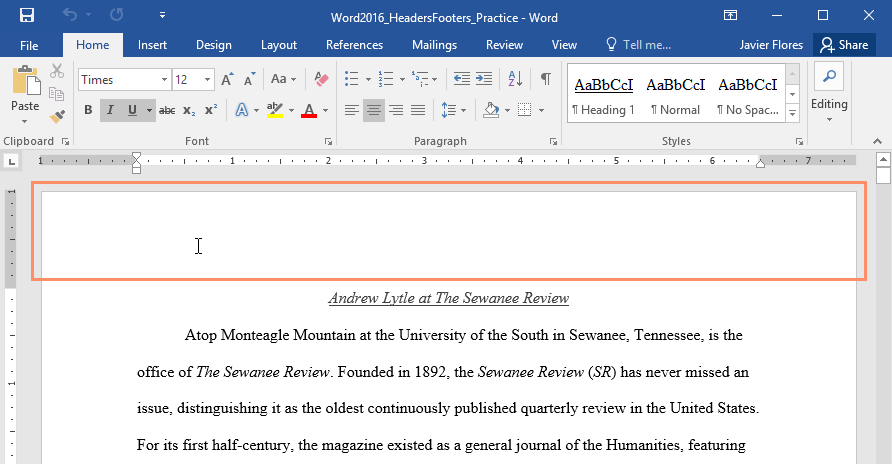
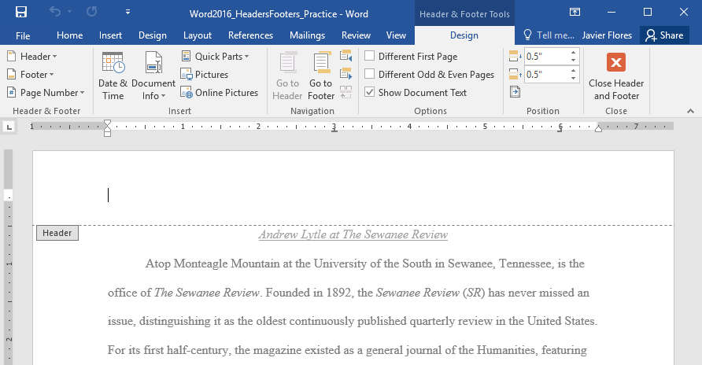
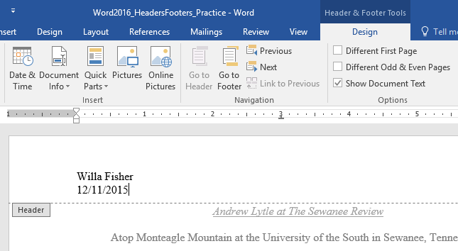
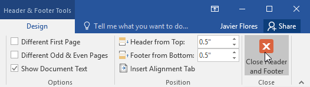
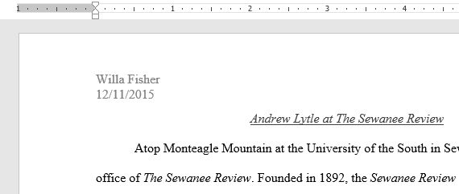
Word are o varietate de anteturi și subsoluri prestabilite pe care le puteți folosi pentru a îmbunătăți designul și aspectul documentului. În exemplul nostru, vom adăuga un antet prestabilit la documentul nostru.
- Selectați fila Inserare, apoi faceți clic pe comanda Antet sau Subsol. În exemplul nostru, vom face clic pe comanda Header.
- În meniul care apare, selectați antetul sau subsolul presetat dorit.
- Va apărea antetul sau subsolul. Multe anteturi și subsoluri prestabilite conțin substituenți de text numiti câmpuri de control al conținutului. Aceste câmpuri sunt bune pentru adăugarea de informații precum titlul documentului, numele autorului, data și numărul paginii.
- Pentru a edita un câmp de control al conținutului, faceți clic pe acesta și introduceți informațiile dorite.
- Când ați terminat, faceți clic pe Închideți antet și subsol. De asemenea, puteți apăsa tasta Esc.
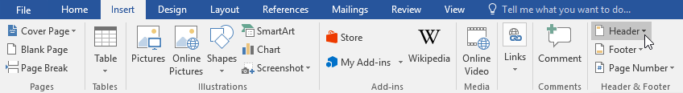
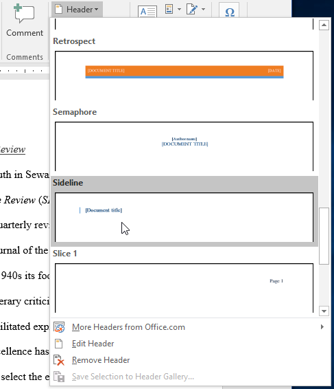
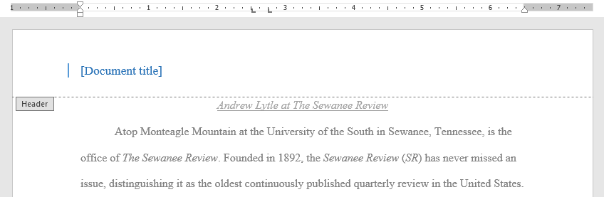
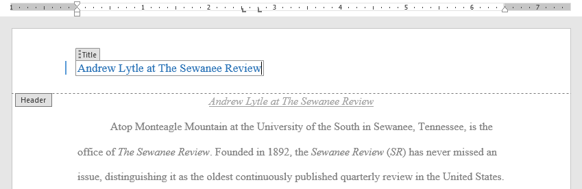
.png)
După ce închideți antetul sau subsolul, acesta va fi în continuare vizibil, dar va fi blocat. Pur și simplu faceți dublu clic pe un antet sau subsol pentru a-l debloca, ceea ce vă va permite să îl editați.
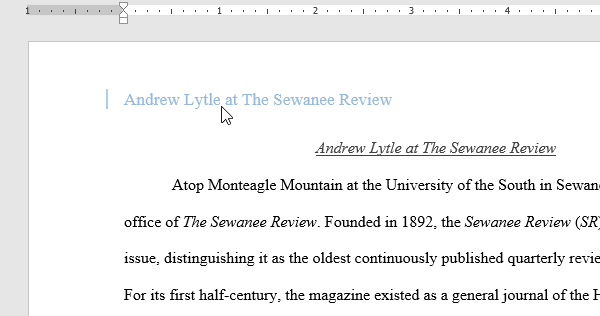
Opțiuni pentru fila DesignCând antetul și subsolul documentului sunt deblocate, fila Design va apărea în partea dreaptă a Panglicii, oferindu-vă diverse opțiuni de editare:
- Ascundeți antetul și subsolul primei pagini: pentru unele documente, este posibil să nu doriți ca prima pagină să afișeze antetul și subsolul, cum ar fi dacă aveți o pagină de copertă și doriți să începeți numerotarea paginii pe a doua pagină. Dacă doriți să ascundeți antetul și subsolul primei pagini, bifați caseta de lângă Prima pagină diferită.
- Eliminați antetul sau subsolul: Dacă doriți să eliminați toate informațiile conținute în antet, faceți clic pe comanda Antet și selectați Eliminare antet din meniul care apare. În mod similar, puteți elimina un subsol folosind comanda Subsol.
- Număr pagină: puteți numerota automat fiecare pagină cu comanda Număr pagină.
- Opțiuni suplimentare : Cu comenzile disponibile în grupul Inserare, puteți adăuga data și ora, informații despre document, imagini și multe altele la antet sau subsol.
- Faceți dublu clic oriunde pe antet sau subsol pentru a -l debloca. Plasați punctul de inserare acolo unde doriți să apară data sau ora. În exemplul nostru, vom plasa punctul de inserare pe linia de sub numele autorului.
- Va apărea fila Design. Faceți clic pe comanda Data & Time.
- Va apărea caseta de dialog Data și Ora. Selectați formatul de dată sau oră dorit.
- Bifați caseta de lângă Actualizare automată dacă doriți ca data să se schimbe de fiecare dată când deschideți documentul. Dacă nu doriți ca data să se schimbe, lăsați această opțiune nebifată.
- Faceți clic pe OK.
- Data va apărea în antet.
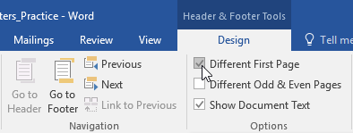
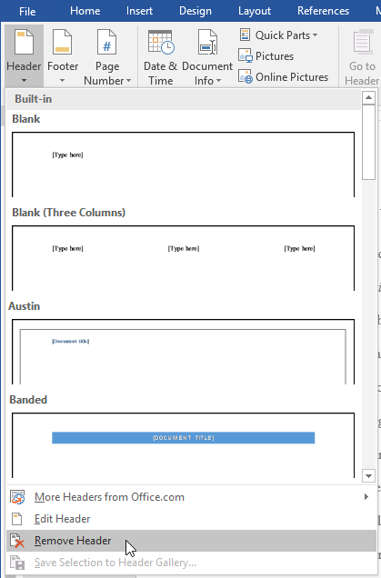
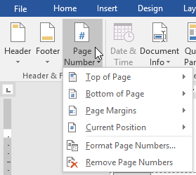
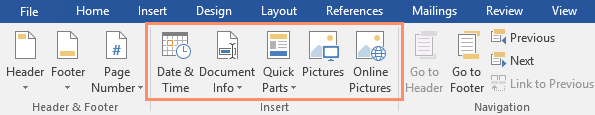
Pentru a introduce data sau ora într-un antet sau subsol:Uneori este util să includeți data sau ora în antet sau subsol. De exemplu, poate doriți ca documentul dvs. să arate data la care a fost creat .
Pe de altă parte, poate doriți să afișați data la care a fost tipărită , ceea ce puteți face setând-o să se actualizeze automat . Acest lucru este util dacă actualizați și imprimați frecvent un document, deoarece veți putea întotdeauna să spuneți care versiune este cea mai recentă.
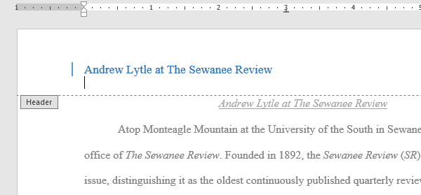
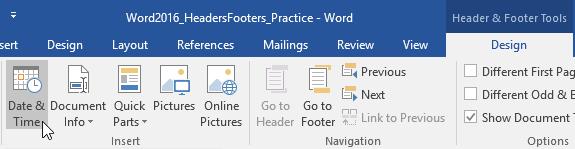

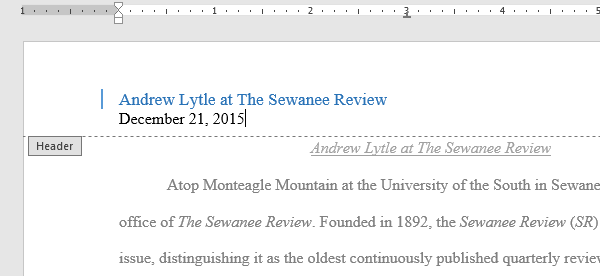